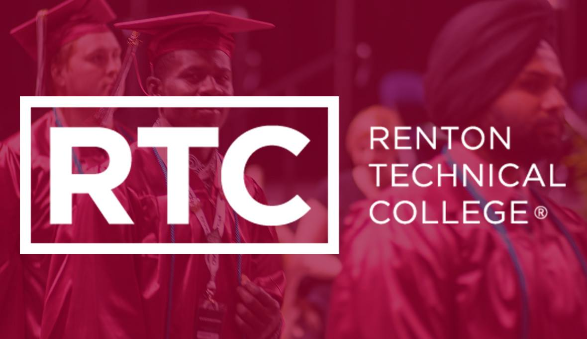

My pathway in Highhline College

When I got here in USA my English was not great. Especially my speaking. So with a help of agency I got intoduced to Highline College to continue my education.
So, I started with taking English classes there. The 3 year program was desgined to give high school diploma and with potencial of college level classes.
Moreover, started with basic English writing class Level 2. Then Level 3 and 4 then I was eligibale to take higher ones each quarter. Until I was ready for college level English 101 course.
Each quarter I was learning more and getting prepared for future courses.
when I got my Highschool diploma I also had some college credit classes like:
- English course like 091 101 Etc
- Scinece Course
- Comuinication
- Art
- PE
- Microsoft Office
- Math
Continute where I left of at Renton Technical College
After a few years of break I decided to go back to school for Computer Science. So, I choose RTC to be for my school
I am currently in my first year and I am working on my Associate degree At RTC
Classes I took so far
- Programming I II III
- SQL Data Base
- Bits/Bytes Cloud Computing
- Front & End Web Development
My goal here is to learn and get my batchers Degree on Computer Science . I am not sure what exaclty I want to do but, I will decide as I take more classes
Work Experiances

I am curently working for a delivery company contracted with Amazon. I stared as a driver and worked my way up to be a dispatcher.
4 years of experiance with delivery and dispatcher
Driver:
- Work independently
- Problem Solveing
- Following GPS and finding house, businesses and APTs no mater what.
- Deliver 250->300 packages daily
- Come back safe and sound
- Dealing with dogs!
- Opereating diffrenent kinds of vehicle + DOT trucks.
Dispatcher:
- Manage over 20 drivers on the raod in daily basis
- Do basic Vehicle maintenace: Changing tires, check fluid level, tire tread, breaks wear and etc..
- Do Interviews, decide if they are fit for the position
- Help with scheduleing
- Computer Skills
- Do stand up and talk about the needs
Past Job: fast food
- Driver Thru,Fryer,Cook,Prep
- Teamleader
- Customer Service
- Answering Phones
Goals
My goal is to learn everyday and grow as a person. Expand my experiance at work and gain and move up in position.
Also, I would like to compelte my education and get my batchlers degree. And, Use that to build a career for myself.